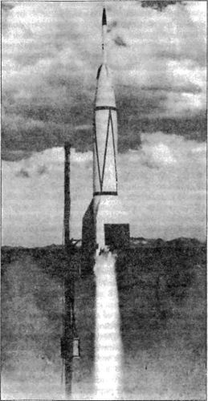

Проект «Bumper»
На самом деле под общим обозначением «Проект Гермес» проходило несколько конструкторских программ, среди которых особое значение для американской космонавтики имел проект «Бампер» («Project Bumper»).
Целью проекта «Бампер» было изучение вопросов создания многоступенчатых ракет, решение проблемы отделения ступеней в ракетах с жидкостными двигателями, а также подъем до максимально возможной высоты. Для достижения этой цели была создана двухступенчатая ракета «Бампер-ВАК» («Bumper-WAC»). Первой ступенью служила модифицированная ракета «Фау-2», второй — «ВАК-Корпорал». Как мы уже отмечали выше, запуски ракет «Бампер-ВАК» некоторые историки считают первым шагом человечества в космос, что безусловно является величайшим достижением американских конструкторов. А по мне так именно проект «Бампер» — самое красноречивое свидетельство отставания США в ракетной гонке. Достаточно взглянуть на саму ракету: вторая американская ступень кажется смешной и лишней на фоне первой ступени, созданной в Третьем рейхе.
Первые шесть пусков ракет «Бампер-ВАК», начиная с первого, состоявшегося в мае 1948 года, были произведены с полигона Уайт Сандс. Лишь пятый из них закончился достижением рекордной (космической) высоты. Этот запуск состоялся 24 февраля 1949 года Уже через минуту после старта ракета «Бампер-ВАК» достигла высоты около 36 километров и развила скорость примерно 1600 м/с. Здесь «ВАК-Корпорал» отделилась от «Фау-2» и продолжила подъем, значительно увеличив скорость. Через 40 секунд после включения своего двигателя «ВАК-Корпорал» летела уже со скоростью примерно 2,5 км/с. Пустая ракета «Фау-2» вначале поднялась еще выше (до 161 километра), а затем начала падать. Когда через 5 минут после старта «Фау-2» разбилась в пустыне в 36 километрах севернее стартовой позиции, ракета «ВАК-Корпорал» продолжала набирать высоту. Ракета поднималась еще около 90 секунд. Высота в 402 километра (по другим данным — 392,6 километра) была достигнута через 6,5 минуты после старта.
«Бампер-ВАК» представляла собой гибрид из двух плохо совместимых систем, а потому ее конструкция была очень далека от совершенства. Теоретически вторая ступень должна была отделяться точно в момент израсходования нижней ступенью всего запаса топлива. В действительности же осуществить это было невозможно, так как ускорение ракеты «Фау-2» в последние секунды работы ее двигателя значительно превышало возможное начальное ускорение второй ступени, то есть ракеты «ВАК-Корпорал». Следующей проблемой являлось воспламенение топлива в двигателе второй ступени. Обычно в ракете «ВАК-Корпорал» оба топливных компонента перемешиваются непосредственно в двигателе и воспламеняются самопроизвольно на высоте нескольких тысяч метров над уровнем моря, где давление окружающего воздуха еще близко к нормальному. Но на высоте 30 километров, где происходит отделение второй ступени, давление окружающего воздуха фактически отсутствует. Это может привести к тому, что поступающее в камеру сгорания топливо быстро испарится и произойдет взрыв. Для того чтобы этого не случилось, в сопле двигателя устанавливается герметизирующая диафрагма, которая разрывается при запуске двигателя.

Ракеты № 8 и 9 по программе пусков предназначались для проведения специального эксперимента, которым был «торжественно открыт» новый испытательный полигон во Флориде. Уже давно признавалось, что полигон Уайт Сандс стал тесен для ракетчиков: расстояние от стартовой позиции на нем до района падения снарядов не превышало половины дальности ракеты «Фау-2». Ракетный полигон большей протяженности можно было найти только на берегу океана. В мае 1949 года были начаты переговоры с английским правительством о том, чтобы создать станции наблюдения и слежения на Багамских островах. Одновременно для строительства стартовых позиций был выбран мыс Канаверал на восточном побережье Флориды.
Однако для первых испытаний, проводившихся на мысе Канаверал по проекту «Бампер», надобности в пунктах наблюдения на Багамских островах не возникло. Ракеты запускались на сравнительно небольшую дальность. Основной целью этих запусков был вывод ракеты «ВАК-Корпорал» на максимально пологую траекторию.
Первый старт ракеты с мыса Канаверал был намечен на 19 июля 1950 года, но график подготовки запуска оказался сорван и его отложили. 24 июля испытание повторили со второй ракетой. На этот раз все прошло хорошо: ракета поднялась, как было намечено, и быстро исчезла в тонкой пелене перистых облаков. Достигнув высоты 16 километров, она начала выходить на наклонный участок траектории, чтобы продолжить полет в горизонтальной плоскости. В это же время ракета «ВАК-Корпорал» отделилась от первой ступени, которая медленно снизилась и была подорвана на высоте 5 километров. Обломки «Фау-2» упали в море на расстоянии примерно 80 километров от стартовой позиции. Ракета «ВАК-Корпорал», слишком маленькая для того, чтобы нести на себе приборы и подрывной заряд, упала в море в 320 километрах от мыса Канаверал.